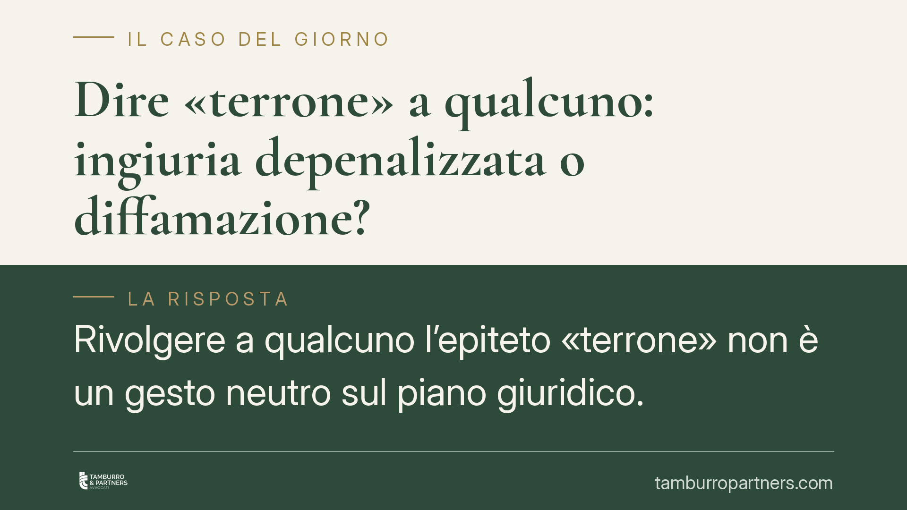

Dire «terrone» a qualcuno: ingiuria depenalizzata o diffamazione?
Rivolgere a qualcuno l'epiteto «terrone» non è un gesto neutro sul piano giuridico. A seconda che la vittima sia presente o assente, e del mezzo usato, la condotta ricade nell'illecito civile depenalizzato o nel reato di diffamazione. Cambiano procedura, sanzioni e strategia di tutela. Vediamo il quadro normativo e le mosse concrete.

Il fatto e perché conta
Un'espressione dispregiativa a sfondo territoriale, come «terrone», solleva un tema ricorrente: quando l'offesa è penalmente rilevante e quando resta un illecito civile.
La risposta dipende da due variabili: la presenza o assenza della persona offesa al momento della frase e il mezzo con cui viene diffusa. Da qui discendono conseguenze molto diverse.
Inquadramento normativo
Occorre distinguere due fattispecie.
L'ingiuria, cioè l'offesa rivolta direttamente alla persona presente, non è più reato. È stata depenalizzata dal d.lgs. 7/2016, che ha abrogato l'art. 594 cod. pen. La condotta resta illecita, ma su un piano civile: l'art. 4 del decreto prevede, oltre al risarcimento del danno, una sanzione pecuniaria civile che va da 100 a 8.000 euro, elevabile fino a 12.000 euro nei casi più gravi. La sanzione è devoluta allo Stato e si aggiunge, non si sostituisce, all'obbligo risarcitorio verso la vittima.
La diffamazione, invece, è tuttora reato ed è disciplinata dall'art. 595 cod. pen. Si configura quando l'offesa alla reputazione altrui è comunicata a più persone e in assenza della vittima. La pena base è la reclusione fino a un anno o la multa fino a 1.032 euro. Il comma 3 dell'art. 595 prevede un'aggravante quando l'offesa è recata con un mezzo di pubblicità: è la fattispecie che ricorre tipicamente nei commenti su social network, post e chat di gruppo, dove il messaggio raggiunge una platea indeterminata.
Va tenuta distinta la diffamazione a mezzo stampa in senso proprio, alla quale si applica anche la L. 47/1948 (legge sulla stampa): una disciplina autonoma rispetto alle piattaforme digitali, che invece rientrano nell'aggravante generale del «mezzo di pubblicità».
La diffamazione è procedibile a querela della persona offesa. Il termine per proporla è di tre mesi dalla conoscenza del fatto, ai sensi dell'art. 124 cod. pen. Si tratta di un termine di decadenza: decorso inutilmente, il diritto di querela si estingue. È bene evitare di definirlo «perentorio» in senso processuale, perché non attiene a un atto del processo ma alla condizione di procedibilità.
Il confine con il diritto di critica
Non ogni espressione forte integra l'illecito. L'ordinamento riconosce il diritto di critica come esercizio della libertà di manifestazione del pensiero, che può operare come scriminante ex art. 51 cod. pen. (esercizio di un diritto), escludendo la punibilità.
Perché operi, però, la critica deve rispettare il limite della continenza: l'attacco deve restare sul piano delle idee e dei comportamenti, senza trascendere nell'insulto gratuito e nell'aggressione alla persona. Un epiteto meramente denigratorio, privo di qualsiasi contenuto valutativo, difficilmente rientra nella critica lecita.
Rilevante è anche l'elemento soggettivo: la Corte di Cassazione valuta la volontà offensiva alla luce del contesto complessivo, del registro comunicativo e del rapporto tra i soggetti. Un termine colorito in un contesto goliardico e privato può essere letto diversamente dal medesimo termine usato pubblicamente per screditare.
Implicazioni pratiche
Per chi riceve l'offesa, la scelta della tutela dipende dalla dinamica dei fatti. Se l'espressione è stata rivolta a tu per tu, la strada è civile. Se è stata diffusa a terzi o pubblicata online, si apre la via penale, spesso con l'aggravante del comma 3.
Per chi pronuncia la frase, il rischio è concreto e a volte sottovalutato: un commento pubblico su un social può integrare diffamazione aggravata. Va inoltre considerato che le reazioni impulsive espongono a una responsabilità reciproca: rispondere all'insulto con un altro insulto non elide l'illecito, ma può aggiungerne uno.
Cosa fare in concreto
- Documenta la prova digitale subito: cattura screenshot completi di data, ora, URL e profilo autore; conserva l'originale senza modifiche.
- Verifica il termine dei tre mesi ex art. 124 c.p. e attivati per tempo: la decadenza è irrimediabile.
- Ricostruisci il contesto: presenza o assenza della vittima, numero di destinatari, mezzo utilizzato. Sono elementi decisivi per qualificare la condotta.
- Evita reazioni a caldo: rispondere in modo offensivo può generare responsabilità a tuo carico.
- Rivolgiti a un professionista prima di scegliere tra querela penale e azione civile: le due strade hanno tempi, oneri probatori ed effetti diversi.
---
Contributo informativo a cura di Tamburro & Partners - Avv. Giuseppe Tamburro. Non costituisce parere legale.
Ogni condominio ha una storia a sé.
Se gestisci un'amministrazione e vuoi un confronto su una specifica questione condominiale, scrivi allo studio. Ti rispondiamo entro un giorno lavorativo.